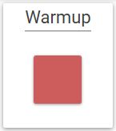
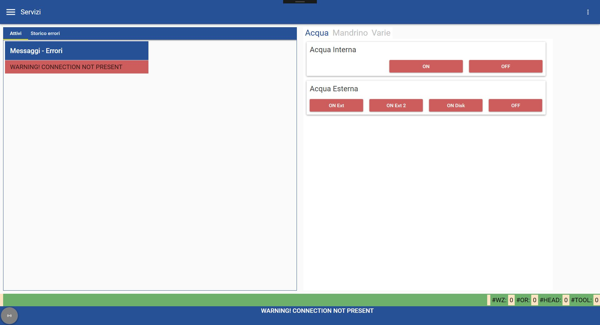
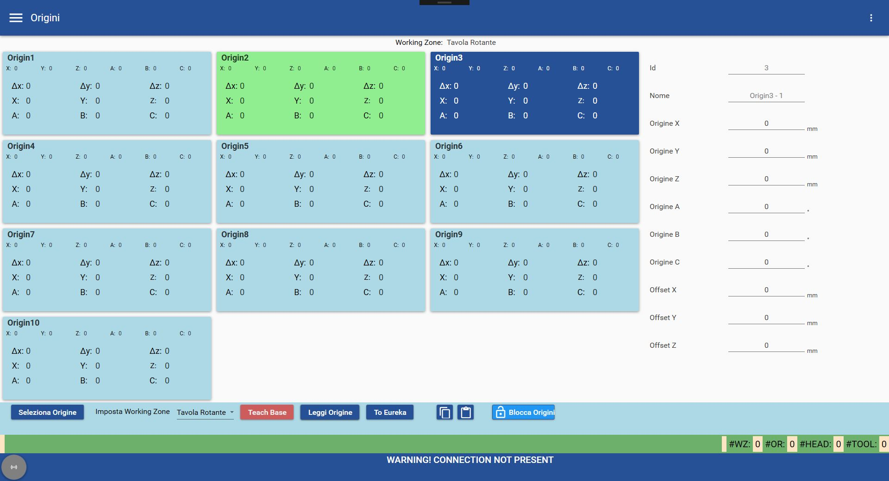
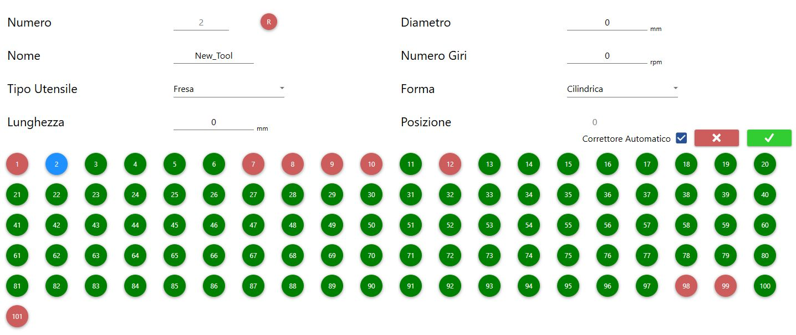
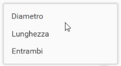
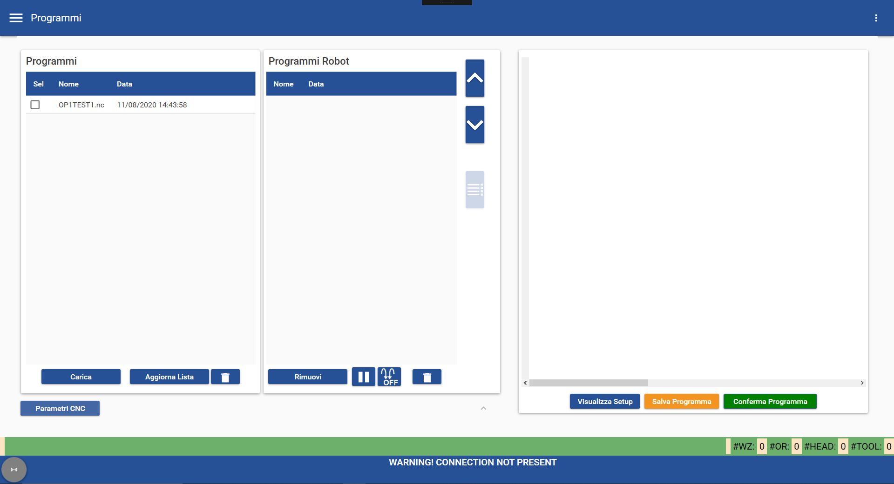
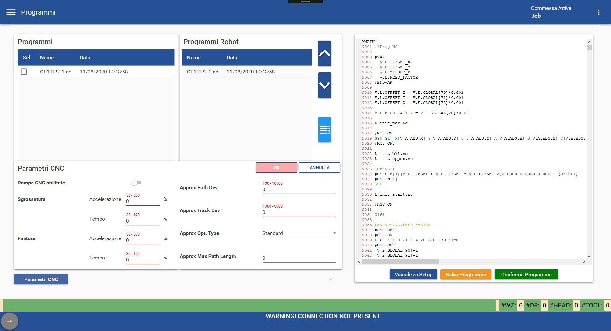
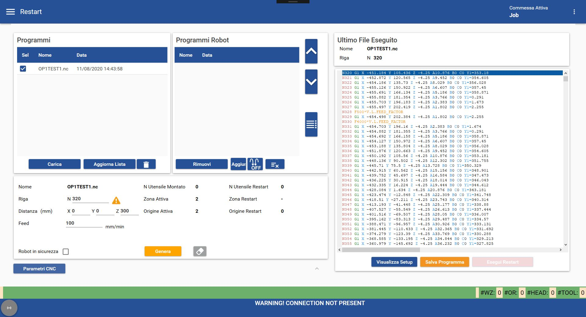
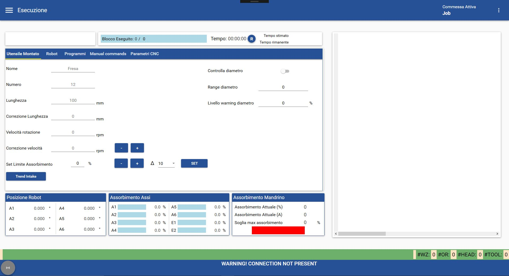
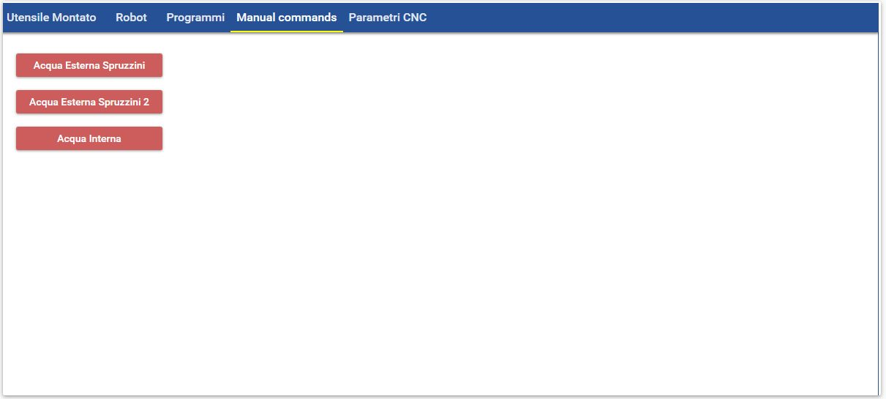

CDI Software Manual
A publication by Donatoni Macchine S.r.l.
Software Version: 1.2
Manual Version: 1.0
Date:
General information
The information contained in this document applies only to the software versions listed on the title page.
This documentation may not describe all the functions available in the product; in such cases, Donatoni Macchine is not obliged to guarantee these functions or retain them in future versions.
Purpose of the manual
This manual provides the operating instructions required for a thorough understanding of the CDI program, as well as useful information for troubleshooting malfunctions.
Correct operation, service life and economical use of the machine depend on compliance with the instructions provided in this manual.
The machine operation and maintenance manual and this software manual must always be available at the plant installation site, stored in a safe and readily accessible place. If either manual is lost, contact the Health and Safety Manager.
Failure to comply with the instructions provided in this manual, negligence, or improper and unsuitable use of the machine may cause the Manufacturer to invalidate the machine warranty and may prevent the machine from delivering the benefits for which it was designed.
DONATONI MACCHINE SRL remains available to provide prompt and accurate technical support and anything else that may help ensure optimum machine operation and performance.
The Manufacturer reserves the right to amend this publication and the data contained herein at its discretion whenever this is deemed necessary for the technical or commercial improvement of the product.
Keeping the manual
This Software Manual must be kept throughout the machine’s entire operating life, including if the machine is transferred to a third party.
To keep the Software Manual in good condition, the following is recommended:
Use the Manual in such a way as not to damage any or all of its contents; in particular, do not leave the Manual unattended during use and return it to its designated location immediately after consultation;
Do not remove, tear out or rewrite any part of the Manual for any reason;
Keep the Manual in an area protected from moisture, heat and other environmental factors that could compromise its integrity or durability;
If all or part of this Manual is lost or damaged, request a copy of the documentation from the Manufacturer.
Software functions
The application allows the robot configuration and machining programs to be managed.
The application consists of several pages that can be selected from the pop-up menu on the left, each of which manages a specific function.
Software pages
The pages are as follows:
DASHBOARD | Main control panel. |
SERVICES | Page used to view the error history and manage certain commands. |
ORIGINS | Page for managing origins. |
TOOL MAGAZINE | Page for managing tools. |
PROGRAMS | Page for managing the programs to be run. |
RESTART | Page used to resume work based on the last program loaded. |
EXECUTION | Page for viewing and managing certain parameters while the program is running. |
JOBS | Page for managing jobs. |
The various software pages are described below.

Status information
The “Dashboard” page is the software start page, where the following information can be viewed:

This information indicates, respectively:
#WZ | Number of the active work zone. |
#OR | Number of the active origin. |
#HEAD | Number of the head currently loaded. |
#TOOL | Number of the tool currently loaded. |
Dashboard commands
The following commands can also be executed:
 | Mastering |
 | Warm-up |
Support | |
 | Spindle warm-up |
 | Reset |

Error history and commands
On the Services page, the active error messages and error history can be viewed in the panel on the left. Several commands, listed below, can also be activated on the right.

Water-flow commands
On the “Water” tab, the various water flows can be switched on or off.
ON | |
OFF | |
 | External ON |
 | External ON 2 |
 | Blade ON |
 | OFF |

Speed adjustment
On the “Spindle” tab, various spindle-related commands can be sent.
In the “RPM” section, the spindle speed can be set in RPM.
Spindle commands
The complete list of commands is provided below.
Clockwise start | |
Anticlockwise start | |
STOP | |
 | ON |
 | OFF |
 | Start |
 | Open |
Close |

Miscellaneous tab commands
On the “Miscellaneous” tab, the following commands can be sent:
Go Work Position | Moves the robot to the parking position. |
Reset Rotary Table | Sends the rotary-table reset command. |

Managing origins
On the “Origins” page, the positions of the origins can be managed and the operations listed below can be performed.
Origin commands
Select origin | |
 | Teach base |
 | Read origin |
 | Copy / paste |
 | To Eureka |
Lock origins |

Managing tools
On the “Tool Magazine” page, the list of defined tools can be checked and tools can be added, edited or deleted. The commands listed below can also be executed.
Tool magazine commands
 | Create tool |
 | Delete tool |
 | Change tool |
 | Unload tool |
Force tool | |
Force no tool mounted | |
 | Measure tool |
 | Unload head |
 | Manual tool change |
 | Corrector list |
 | Synchronise tools |

Assigning the corrector
To create a tool, a specific corrector must be defined. It can be assigned automatically or selected manually.
Tool properties
The following properties are defined for each tool:
Number | Represents the corrector and can be changed using the buttons.  |
Name | Name assigned to the tool |
Tool type |  |
Extension type | Type of tool extension. An XML file representing the extension and used by Eureka is also associated with it. |
Position | Position within the tool magazine |
Length | Tool length |
Diameter | Tool diameter |
Rotational speed | Motor speed set for the tool in rpm |
Length correction | Tool-length correction value |
Mass | Tool mass |
Internal water | Switches on the tool’s internal water flow |
External blade water | Switches on the external water flow for the saw blade |
External milling-cutter water | Switches on the external water flow for the milling cutter |
External milling-cutter water 2 | Switches on the external water flow for the additional milling cutter |
Preset flag | Indicates whether the tool is to be probed |
Measurement Type | Indicates the type of measurement  |
Maximum current draw | Indicates the maximum current-draw percentage |
Operating hours | Indicates the tool’s operating hours. The counter can be reset using the button.  |
Syn CADCAM | Indicates whether the tool is to be synchronised with CADCAM, manual synchronisation,  automatic synchronisation. |
Syn Eureka | Indicates whether the tool is to be synchronised with Eureka,  manual synchronisation,  automatic synchronisation. |

Managing the program list
On the “Programs” page, the list of programs to be run can be managed. The program order can be defined, pauses can be inserted and commands such as air-blast switch-off can be added.
Programs page commands
Load | |
 | Refresh list |
 | Remove |
 | Pause and vacuum switch-off |
Series production management | |
View setup | |
Save program | |
Confirm program | |
CNC parameters |

CNC parameter configuration
Pressing the “CNC Parameters” button opens the window shown in the figure, where the CNC parameter values can be set. Press “OK” or “CANCEL” to confirm or discard the entered values, respectively.

Resuming machining
On the “Restart” page, the last program executed can be viewed and, where possible, machining can be resumed from the point at which it was interrupted.
Restart commands
Generate | |
Remove restart | |
Run restart |
Conditions for resuming
The restart program can be run only if the active zone, active origin and mounted tool are the same as those specified in the restart file.
For the list of other commands, refer to the table on the “PROGRAMS” page.
For the “CNC Parameters” tab, refer to the “CNC PARAMETERS” page.

Progress
On the “Execution” page, the progress of the running program and robot information, such as the position and the current draw of the axes and spindle, can be viewed, along with information about the mounted tool.
CNC parameters
For the “CNC Parameters” tab, refer to the “CNC PARAMETERS” chapter.

Tool parameters and adjustments
On the “Mounted Tool” tab, various parameters of the currently mounted tool can be viewed. The following values can also be changed:
Speed correction
Set the current-draw limit (“Set Current-Draw Limit”)
Enable or disable the diameter monitoring function (“Check Diameter”) and set its limit values (“Diameter Range” and “Diameter Warning Level”)

Work zone and origin
On the “Robot” tab, the set work zone and origin can be viewed. The following parameters can also be changed:
Robot parameters
Speed Factor | Factor ranging from 0.5 to 2 that adjusts the robot’s machining speed. |
Override Factor | Percentage factor ranging from 10 to 150 that adjusts the robot’s overall speed. |
Execution queue
This section shows all programs queued for execution, the execution time of each program and the estimated time.
Tools used
The list of tools used for machining is also provided.

Commands during execution
On the “Manual Commands” tab, certain commands can be manually enabled or disabled while the program is running.
External spray-nozzle water | |
External spray-nozzle water 2 | |
Internal water |

Managing jobs
On the “Jobs” page, the list of active jobs and the information relating to each job can be viewed.
 | Manage jobs |
 | Job statistics |
Job time accounting
This function is useful for recording work carried out as part of the same job.
For each completed task, the machining time will be added to the job duration.